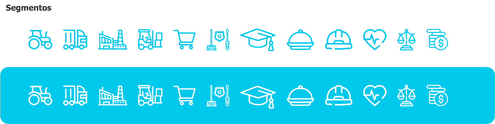

Segmentos — biblioteca oficial (traço fino, cyan)

Substituto em HTML — Phosphor (regular)
Single-color, thin even stroke, rounded terminals. Substitute the official set when the icon font is available.